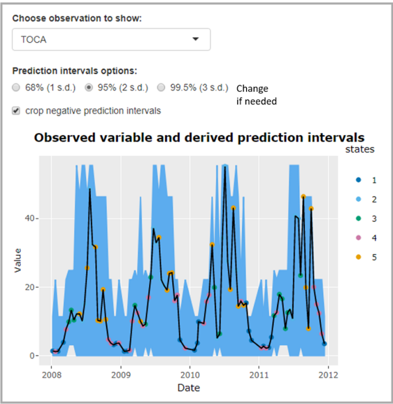

Chapter 2 Apps to allow improved contextual understanding of data
For Demonstration purposes only. Under development.
Data science methods provides new ways to analyze and understand environmental science data. Shiny apps can be a powerful way to showcase a methodological method with some real-world environmental science examples.
2.1 ECN/Lakes state tagging app
In this example, Tso et al. (2020) proposed a state tagging method to improved environmetnal data quality assurance. Contextual data (e.g. weather variables) are used to classify the state of the system arbitrarily. The user can then look at the inter- and intra-class variability of their observed variables. This method provides a step change to conventional range checks on envrionmental data.
In addition to two apps that demonstrates the method with ECN moth and Cumbrian Lakes chemistry data, a generic version of the app is also created to allow users to upload the same method to create the same analysis.
- https://statetag-ecnmoth.datalabs.ceh.ac.uk/
- https://statetag-lakes.datalabs.ceh.ac.uk/
- https://statetag-generic.datalabs.ceh.ac.uk/

2.2 Fuzzy changepoints demo app
Changepoints analysis is a method to detect sudden change in statistical properties in a time series. However, when comparing the changepoints from two time series, it may not be straightfoward due to due different frequencies and underlying generation process. Hollaway et al. (2021) proposed a method to assess the agreement of changepoints detected in observe and simulated data using a fuzzy logic framwork, and demonstrated the method with a Shiny app.
https://dsne-fuzzycpteval.datalabs.ceh.ac.uk/
Figure 2.1: A figure illustrating the fuzzy changepoints concept.
2.3 Cropnet demo app
References
Hollaway, M. J., P. A. Henrys, R. Killick, A. Leeson, and J. Watkins. 2021. “Evaluating the Ability of Numerical Models to Capture Important Shifts in Environmental Time Series: A Fuzzy Change Point Approach.” Environmental Modelling & Software 139 (May): 104993. https://doi.org/10.1016/j.envsoft.2021.104993.
Tso, Chak-Hau Michael, Peter Henrys, Susannah Rennie, and John Watkins. 2020. “State Tagging for Improved Earth and Environmental Data Quality Assurance.” Frontiers in Environmental Science 8 (May). https://doi.org/10.3389/fenvs.2020.00046.